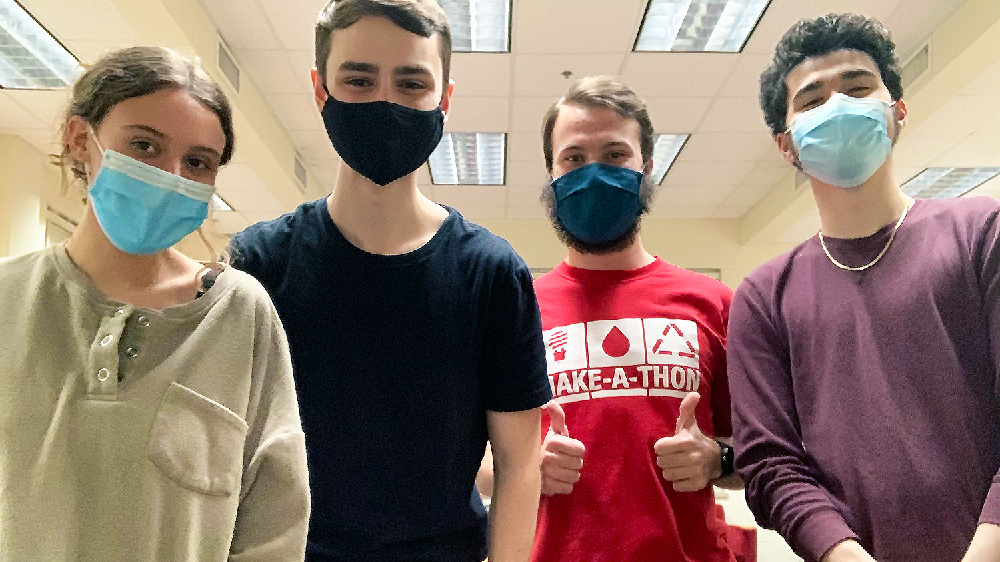

Projects
NCSU Make-A-Thon 1st place - Mandu
A Winning Solution to Reducing Food Waste
Mandu
Collaborated with a team to create an 1st place winning app prototype Mandu that steers food from landfills and into the community.
Mandu financially incentivizes grocers to donate their less desirable looking, but healthy produce, to local food shelters.
Work Experience
Technical Director
NCSU Engineers Without Borders
November 2020 - November 2022
Maintained the NCSU-EWB website and troubleshoot technical issues for our virtual conduction of processes.
Technical Director:
- Produce concrete solutions to the real-world problems of international communities for projects in Sierra Leone, Guatemala, and North Carolina.
- Communicate virtually in English and Spanish with affiliates to safely execute our designs during the pandemic.
Education
Wake Technical Community College - Raleigh
Mathematics and Computer Science, 2024
Languages in order of proficiency: Java, Python, HTML, CSS, JavaScript, C++
Tools & Technologies: Git, Jenkins, Linux, Bash, Adobe Photoshop